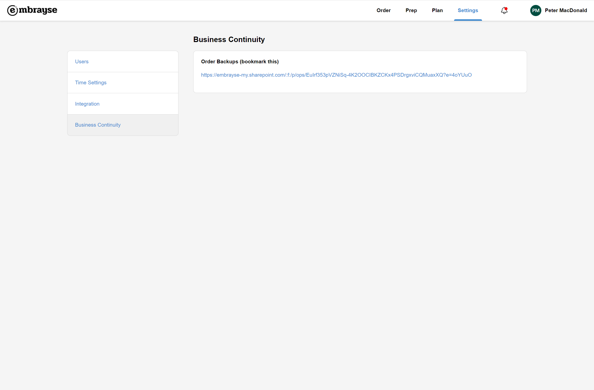

What's new in release 2021.7
This release contains resident profile improvements, as well as new business continuity measures.
Resident tags
It is not uncommon for some residents to have specialised dietary requirements or meal preparation needs. Examples of this includes requiring texture modification but only for certain types of foods, or needing meals to be fortified with protein or vitamins. The new tagging system allows you to create any custom tags you like, to capture important information for meal preparation. You can also filter the prep report by one or more tags so that you can concentrate on specific preparation tasks.
Residents notes
As you can see in the screenshots above, we have also added a new Notes field to capture any additional dietary information about a resident. This information is more descriptive and can be seen on the resident ordering page to help information meal choices.
Business continuity
Let's face it: as helpful as technology is, from time to time it can fail us. On rare occasions you may face network or system outages, Wi-Fi problems or even hardware issues with your devices. To avoid interruptions to your meal service we now generate PDF forms which you can print and have on hand in case it's needed. If you have partially or fully collected the orders for the day, that information will also appear on the form so you don't lose any of it. You just need to access the form (e.g. using a mobile phone, in case your Wi-Fi is not working) and print the forms. The link to the share folder where the forms are stored is available to administrators from the Settings. Be sure to bookmark this link, in case Embrayse itself is experiencing an outage.
Other improvements and bug fixes
We have made a few other improvements and bug fixes:
- Added Sipper Lid to the list of special utensils.
- Added Wheat, Lupin and Sulfite to the list of allergens.
- The relative time shown on notifications is now more accurate.
- Fixed: the list of dining locations on ordering page is not sorted correctly.
- Fixed: when the user session has ended, the user is shown an error message before being redirect to log in again.